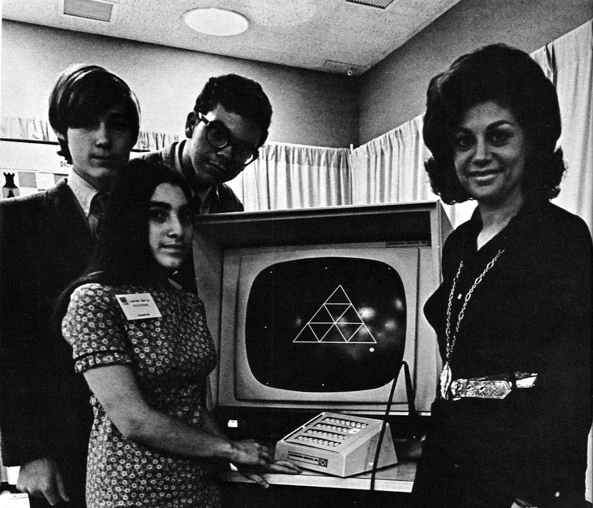
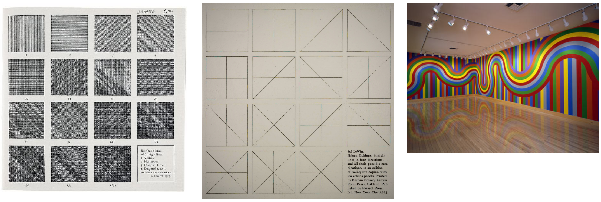

Below are some images from the 1970 exhibition "Software, Information Technology: Its New Meaning for Art" curated by Jack Burnham at the Jewish Museum in New York which I discuss in the video. You can view a pdf of the full program here (the non-hypertext prrogram of course) it's definitely worth a look through.
Sonia Sheradin, whose work with early 3M color photocopiers was featured in the Software exhibition, was another early Computer Art pioneer. She founed the Generative Systems research program at the School of the Art Institute of Chicago.
Here Ted Nelson reviews exhibition plans with the show's exhibition designers James Mahoney. Nelson designed a hypertext catalogue for the Software exhibition called "Labyrinth" where visitors would sit at a "keyscope terminal" and interactively navigate different sections of the program. "Before leaving the show, the museum goer may obtain a printout of what he himself has selected to read in the interactive catalogue by giving his name to an attendant at the line printer by the main exit. This catalogue system was programmed for the PDP-8 by Ned Woodman of Art & Technology, Inc"
pictured below are three members of the R.E.S.I.S.T.O.R.S. (Radically Emphatic Students Interested in Science,Technology and Other Research Studies) that rare/early "computer club" of middle and high school students I mention in the video who collaborated with conceptual artist Agnes Denes (on the right)
The idea becomes a machine that makes the art
Sol Lewitt
The first two images are examples of instructions Lewitt would send to a museum or gallery, the last image is an example of the "executed" painting (created the gallery assistants from following Lewitt's instructions)
Three examples of Yoko Ono's instruction pieces.
There doesn't seem to be much online about the "Praystation Harddrive" (which is insane to me, because there's plenty of material online about Joshua Davis, and as I mention in the video, I think this is his most interesting work). That said, there is some documention of Eva and Franco Mattes project Life Sharing on the rhizome net art anthology site (you should definitely check out some of their other net art as well http://0100101110101101.org/)
You'll find the repo for the Form+Code assignment on the class GitHub group page.
As I mention in the introductory lecture video, those interested in learning the native Canvas API in the browser (Deep Dive) can find tutorials on the Mozilla Developer Network (if you do take that deep dive and have any questions regarding the API send me an email). MDN also links to "Canvas Deep Dive" should you want to dive even deeper.
If you'd like to dive deeper into other algorithmic compositional approaches checkout the playlist of the JavaScript (p5.js) version of Daniel Shiffman's Nature of Code book.